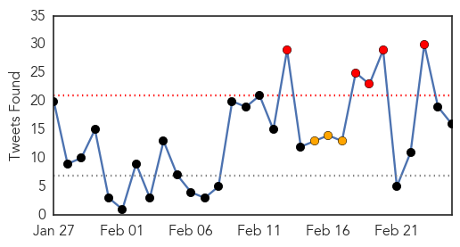
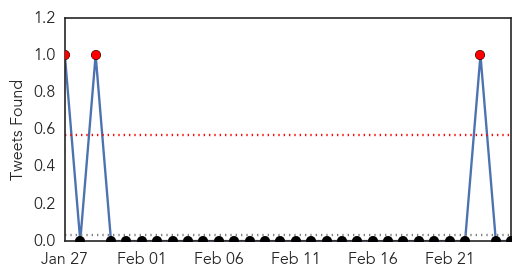

Ebola
30-Day Web Trend
0 alerts, 0 warnings

30-Day Twitter Trend
13 alerts, 4 warnings

Article Locations

Article Confidences

Top Articles:
- 1.000
- The “Africanization” of Ebola Harvard Political Review
- 1.000
- Ebola by the Numbers
- 0.999
- Ebola endemic in west Africa remains a risk, scientists warn
- 0.999
- As Ebola wanes, MN sticks with expensive monitoring program
- 0.999
- New Ebola scare as fifth British healthcare worker is flown back to the UK
- 0.999
- UN: Battle to contain Ebola not over
- 0.999
- Six Lessons from the Initial Failed International Response to Ebola
- 0.998
- Ebola detected in Guinea victims, 50 dead
- 0.998
- Third UK health worker admitted to Royal Free in Ebola needle scare
- 0.997
- Sierra Leone reports sharp spike in Ebola cases
- 0.997
- New York doctor who survived Ebola speaks out
- 0.997
- Worries Over Ebola's Sexual Transmission Force Survivors To Make Hard Choices
- 0.996
- Ebola: exposing the failure of international development
- 0.996
- The Connaught Dialysis Unit, Pride of the First Lady Expected to Commence Operations Soon
- 0.996
- Defence Secretary Praises UK Troops for Efforts in Salone
- 0.995
- Schools reopen as Ebola declines — SOS Children
- 0.995
- Simple paper strip test can rapidly diagnose Ebola
- 0.995
- Sierra Leone reports sharp spike in Ebola cases
- 0.993
- New healthcare worker with potential exposure to Ebola brought to UK for precautionary monitoring
- 0.993
- Ebola Situation report 25 February 2015 - Sierra Leone
- 0.992
- Guinea and Cote d’Ivoire to reinforce vigilance against Ebola virus
- 0.992
- North Platte Nebraska's favorite newspaper
- 0.992
- Feature: Guinea in race against time to end Ebola
- 0.992
- AU welcomes back first group of health workers deployed to fight Ebola
- 0.992
- Guinean, Cote d'Ivoire experts urge "more vigilance" over Ebola - Xinhua
- 0.990
- Guinea to eradicate Ebola within 60 day deadline
- 0.990
- Experimental Ebola Drug May Be Effective in Patients in Early Stage of Disease
- 0.990
- AU welcomes back first group of health workers deployed to fight Ebola
- 0.988
- Missionary Who Contracted Ebola Returns to Liberia
- 0.986
- Sierra Leone News : Bo District Scores 42 Days No-Ebola Infection: Sierra Leone News
- 0.983
- Ebola drug shows some promise in first tests in West Africa
- 0.982
- Ebola survivors empower 'hot spot' communities in Sierra Leone to fight virus amid new cases
- 0.980
- 2 Maryland school systems close for snowy roads Wednesday
- 0.980
- Holocaust survivor: I'm alive thanks to Schindler
- 0.979
- US Health & Human Services Delegation to Visit Liberia, Guinea
- 0.977
- Limited promise in early results from Ebola drug trial
- 0.973
- 99 Ebola cases in past week, nearly two-thirds in Sierra Leone
- 0.972
- News, Sports, Jobs, Community - The Leader Herald
- 0.957
- Sierra Leone’s officials break their own ebola emergency laws
- 0.949
- Make outbreak research open access
- 0.944
- WHO's appeal to tackle needs in four crisis-torn nations
- 0.938
- Learning from Ebola, Harvard researchers suggest more open data
- 0.938
- Oxfam to fund Ebola eradication project in West Africa - Xinhua
- 0.929
- Orthodox Church Donates to fight Ebola
- 0.926
- Guinean cleric cleared of assault on Ebola worker
- 0.924
- Now, get tested for Ebola within 10 minutes
- 0.916
- Now, get tested for Ebola within 10 minutes , AniNews.in
- 0.911
- Ebola drug shows some promise in first tests in West Africa
- 0.909
- As Humanitarian Crises Multiply, Maternal Health and Safety of Women Becoming a Focus
- 0.907
- Sierra Leone
Showing top 50 articles...
Top Tweets:
- 0.988
- Ex-Ebola Czar Ron Klain: 5 management lessons from the Ebola outbreak - Fortune http://t.co/C4uUqbQNC5 ebola EVD
- 0.946
- Ebola: By the numbers - Al Jazeera America http://t.co/NQ2JnBTr0r ebola EVD
- 0.937
- Pressure mounts on WHO chief over Ebola - CNBC http://t.co/m4dnfgqHUa ebola EVD
- 0.903
- Ending the Ebola Outbreak http://t.co/iMDQsUmvg8
- 0.902
- Fearing Ebola, N. Korea bars tourists from capital marathon - The Seattle Times http://t.co/yH6nqUj39I ebola EVD
- 0.885
- RT: Ebola Update: 23,539 confirmed, probable and suspected cases reported in 3 most affected countries, with 9,541 deaths. EbolaRe…
- 0.876
- Fear of Ebola's sexual transmission drives abstinence, panic - Times LIVE http://t.co/dJ235ZXU4h ebola EVD
- 0.865
- Kennedy Airport passenger has Ebola-like symptoms, say authorities - Newsday http://t.co/co8egtq12H ebola EVD
- 0.804
- Guinea and Coted’Ivoire to reinforce vigilance against Ebola virus SpyghanaCom http://t.co/gyN6oMyHCl
- 0.791
- RT: Sierra Leone eyes post Ebola recovery: Six workers have died from Ebola, tens of thousands of v... http://t.co/nZPObSvI3e Eb…
- 0.789
- Traditional Healer Returns to First Ebola-Affected Village - New York Times http://t.co/bdVgBMGVO7 ebola EVD
- 0.781
- Traditional healer called back to remove curse of first Ebola-affected village ... - U.S. News & W... http://t.co/jGwRrvgzGF ebola EVD
- 0.712
- if you DM me I could put you in touch with Liberian Ministry of Health. ebola
- 0.708
- RT: .@WHO New Ebola cases: Guinea,35, SierraLeone 63, Liberia 1. http://t.co/Phc5pdlUlf
- 0.705
- Four new Ebola cases discovered in Liberia. http://t.co/aFMLRrvKTf AfricaAgainstEbola AUonebola @PaulKagame
- 0.699
- RT: Guinea: Cases continue2arise from unknown transmission chains. SierraLeone:Ebola transmission remains widespread. http://t.…
- 0.687
- RT: INFOGRAPHIC Updated timeline of the west African Ebola outbreak that has now killed more than 9,000 people http://t.co/hVD6nWp36Z
- 0.672
- RT: Sierra Leone man who worked with children orphaned by Ebola has died of the disease http://t.co/P32PQcherl http://t.co/m3LQi…
- 0.657
- RT: .@USArmy Ebola labs close w/ progress across Liberia, some labs remain 2 test many viruses https://t.co/5Yz6xgWVvt http://…
- 0.643
- Video: Schools in Liberia reopen after months fighting the Ebola epidemic via http://t.co/lfOfRRL6E3
- 0.641
- Doctor who survived ebola gives blood sample to aid in research - KSAT San Antonio http://t.co/IjboP0dw8Y ebola EVD
- 0.630
- New York City Ebola Doctor Slams Media And Governors Christie And Cuomo - Forbes http://t.co/qFuEwsJA2C ebola EVD
- 0.629
- Nigerian doctor who survived Ebola visits S.A. to aid in research - KENS 5 TV http://t.co/GQPAiFiRDw ebola EVD
- 0.605
- Orphans and Ebola : estimating the secondary impact of a public health crisis | @worldbank http://t.co/4XgGaCKQGX
- 0.582
- Liberia's Ebola humanwaste dilemma WASH http://t.co/qqqvujrVTd
- 0.575
- RT: Piece from shows decline in Ebola across W. Africa, notes difficulty in getting to 0-cases 0-transmission http://t…
- 0.563
- RT: There are a number of challenges facing Ebola control, writes. One of the wildcards is rain. http://t…
- 0.540
- Caring for Ebola patients in SierraLeone http://t.co/cewUuRVM7c
- 0.529
- RT: After RITE implemented, nearly 3x as many Ebola patients entered isolation and received treatment. http://t.co/Sl8GW9g7ES
- 0.526
- Ebola : prometteur, l'antiviral japonais ne fera pas de miracle favipiravir http://t.co/R3bj8E2C9Y via
- 0.522
- Today's news on avianflu avianinfluenza Ebola EbolaResponse MERS available here: http://t.co/Ozw99Tc3gB
- 0.521
- West African Ebola crisis and orphans | @thelancet http://t.co/8gInxzLSYU
- 0.517
- Omaha's first Ebola survivor talks to KETV - KETV Omaha http://t.co/KkOFRrBJDg ebola EVD
- 0.510
- RT: Ebola shut Liberia'n schools but now kids r returning! W/ @UNICEF we prep'd back 2 school kits 2 keep kids healthy http://t.…
- 0.509
- welcomes back the batch of health workers deployed to Liberia Ebola .http://t.co/cIVVWIvE8S Africaaginstebola AUonebola
Measles
30-Day Web Trend
11 alerts, 4 warnings

30-Day Twitter Trend
6 alerts, 0 warnings

Article Locations

Article Confidences

Top Articles:
- 0.995
- Measles Cases Continue to Rise across the US
- 0.983
- Officials declare end of measles outbreak in Utah but have warning for residents
- 0.980
- Measles vaccinations urged in Europe amid outbreaks
- 0.978
- WHO urges more vaccinations against measles in Europe amid outbreak
- 0.977
- WHO calls for vaccinations against European measles epidemic
- 0.975
- The Chaffee County Times: Free Content
- 0.974
- WHO calls for vaccinations against European measles epidemic
- 0.974
- WHO calls for vaccinations against European measles epidemic
- 0.972
- Toddler dies of measles in Berlin, first death in outbreak
- 0.971
- Utah Department of Health declares end to measles outbreak
- 0.970
- Sudbury health officials on the alert for measles
- 0.969
- As flu season winds down, health officials continue to encourage getting vaccinated
- 0.968
- Officials: Measles outbreak in state is over, cost $115,000 to manage
- 0.968
- Measles is no longer spreading in Utah
- 0.967
- Outbreak causes vaccination debate to heat up
- 0.964
- Health officials urge vaccinations as measles cases on the rise
- 0.962
- Recent measles case prompts vaccination debate
- 0.954
- UN health agency ‘taken aback’ as measles resurfaces in Europe, calls for widespread vaccination
- 0.954
- 18-month-old baby dies in German measles outbreak
- 0.954
- Measles Resurfaces in Europe
- 0.953
- REFILE-WHO calls for more measles vaccination in Europe as large outbreaks persist
- 0.952
- WHO Urges Increased Vaccinations After 22,000 Cases And Multiple Deaths
- 0.950
- WHO Urges Europe to Vaccinate Against Recent Measles Outbreak
- 0.942
- As flu season winds down, health officials continue to encourage
- 0.936
- IN-DEPTH RADIO :: Toddler diagnosed with measles in Elliot Lake, Ont. :: News
- 0.936
- WHO calls for more efforts to fight measles - Xinhua
- 0.932
- lehighacrescitizen.com, news, sports, Florida info, Lehigh Acres Citizen
- 0.931
- Toddler in northern Ontario with no history of travel contracts measles
- 0.926
- OP-ED: A nurse weighs in on vaccinations
- 0.921
- Toddler Dies as Measles Outbreak Hits German Capital
- 0.909
- Illegal Immigration Did Not Cause Measles Outbreak
- 0.904
- A new threat on the U.S.-Mexico border: Americans with measles
- 0.899
- Stop Blaming Illegal Immigrants For the Measles Outbreak
- 0.884
- WHO/Europe calls for scaled-up vaccination against measles
- 0.877
- Europe: Measles outbreaks prompt WHO to call for push for vaccinations
- 0.872
- Appendix. The situation in the seven affected countries
- 0.866
- Measles 'patient zero' and why outbreak might not be over
- 0.853
- WHO ′taken aback′ by high number of measles cases
- 0.846
- Europe urged to step up vaccinations against measles
- 0.841
- Dana Hills High School
- 0.840
- WHO to provide vaccinations against measles
- 0.840
- safe or not?. Health. Tengrinews.kz
- 0.836
- Is the Lower Shore ready for measles?
- 0.832
- WHO Fights for Vaccine Campaigns After Thousands Are Infected in Europe
- 0.814
- Measles hits close to home
- 0.814
- Vaccination against measles in Kazakhstan puts teenagers into hospital beds. Health. Tengrinews.kz
- 0.812
- WHO Launches Billion-Dollar Health Appeal for Four Countries
- 0.812
- WHO Launches Billion-Dollar Health Appeal for Four Countries
- 0.808
- Elliot Lake patient’s measles diagnosis could be example of new Ontario virus – Manitoulin Expositor
- 0.804
- WHO 'taken aback' by measles outbreaks
Showing top 50 articles...
Top Tweets:
-
No tweets found for Feb 25, 2015